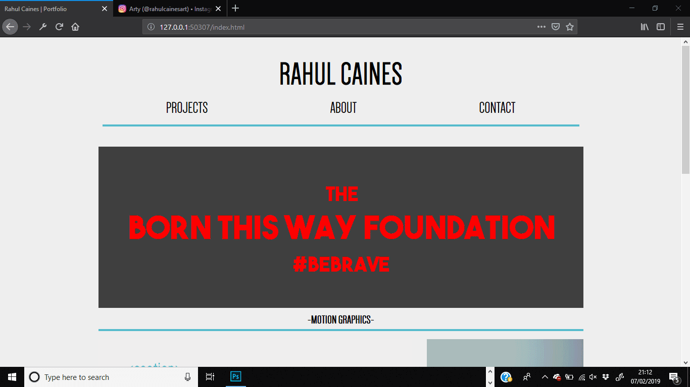
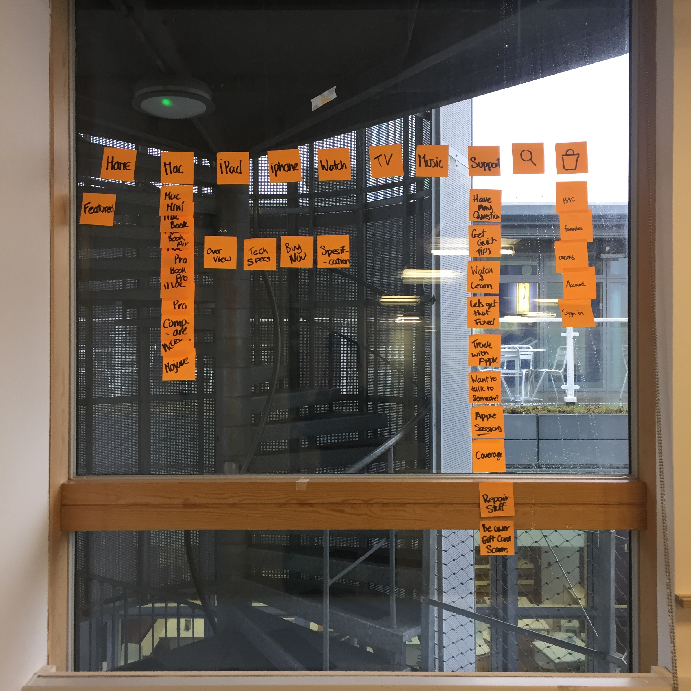

- WEBSITE DESIGN -
-The Brief
The second task of this project I was tasked with creating a website to display an online portfolio and identity that can be accessible to potential employers . This website should include an ‘about me’ section. Through workshops and experimentation I developed the website you are on now. Although it wasn’t an aim, I wanted to show my personality if possible.
-Wireframe-
Prior to creating a website we learnt about wireframes from Mark. This was to familiarize us with the structure and layout of a website and how we could apply this to our own. I found this useful workshop to get started off with as it eased me into the mindset of how to layout a website.
In groups we looked at Apple’s website to see how a live website was laid out. This was also helpful for user navigation which plays a important role in user experience and if a website is memorable.

- Evaluation -
This project was by far the most challenging project I had undergone since being at University. The software I were introduced to was completely unknown to me, which made the project very overwhelming. However I overcame challenges with coding to create this website that I am very pleased with.
The task at hand was to hand code your own portfolio to show an online identity for yourself. Although technically difficult, the outcome of this project would be extremely beneficial for the future.
Attending Mark’s workshops gave me the basic knowledge of HTML and CSS to go and experiment with my own website and create what I wanted to. We were taught about grids and layouts and how to place things within our website. This process was very trial and error which was daunting as we had such a limited time to create the website. Nonetheless, I managed to design something which I am proud of.
The wireframe workshop where we analysed a live website also gave insight into user navigation of my own website. A wireframe I found out was a very important task to undertake as this would help us when coding our websites.
This project was the most challenging however the outcome is something I can be proud of knowing I worked hard and overcome challenges in order to complete this project. I still aim to improve certain parts of this website, continuing to add and develop more complicated features to refine the visual aesthetic.